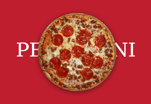
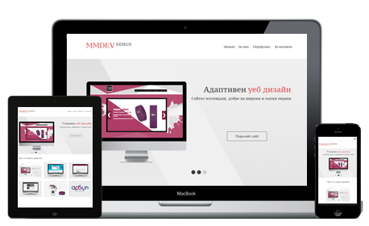

Част от моите проекти
Сайта е бил номиниран няколко пъти в престижните css галерии.

Уеб дизайн на Пицария Пеперони
Официална интернет страница на БАЛКАНГАЗ 2000 АД
Нов модерен шаблон, адаптивен и номиниран в престижните CSS галерии.
Онлайн магазин за часовници Too2late.bg
Арбул 8 е търговскафирма в областта на /UPS/ и аварийни токозахранвания.
Какво предлагам

Модерен уеб дизайн придружен с новите уеб технологии HTML5, CSS3 и още:
-
- Адаптивен дизайн
- Онлайн магазин
- Динамичен сайт
- Дизайн до PSD файл
- Нарязване на PSD файлове
- Семантичен HTML